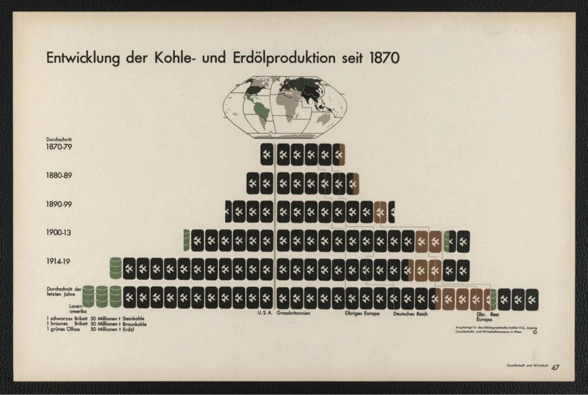
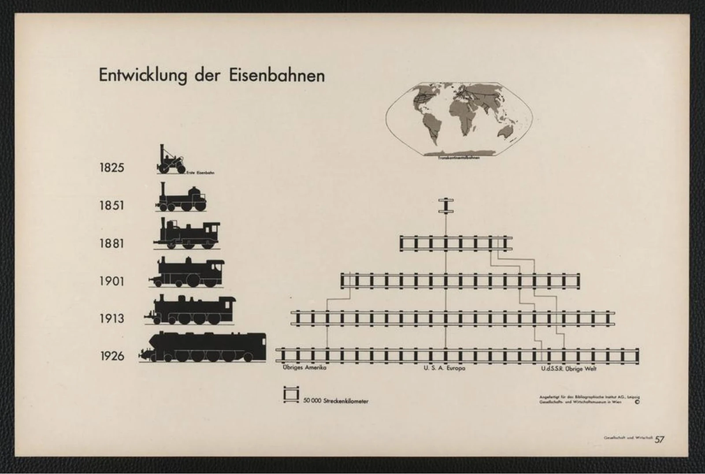
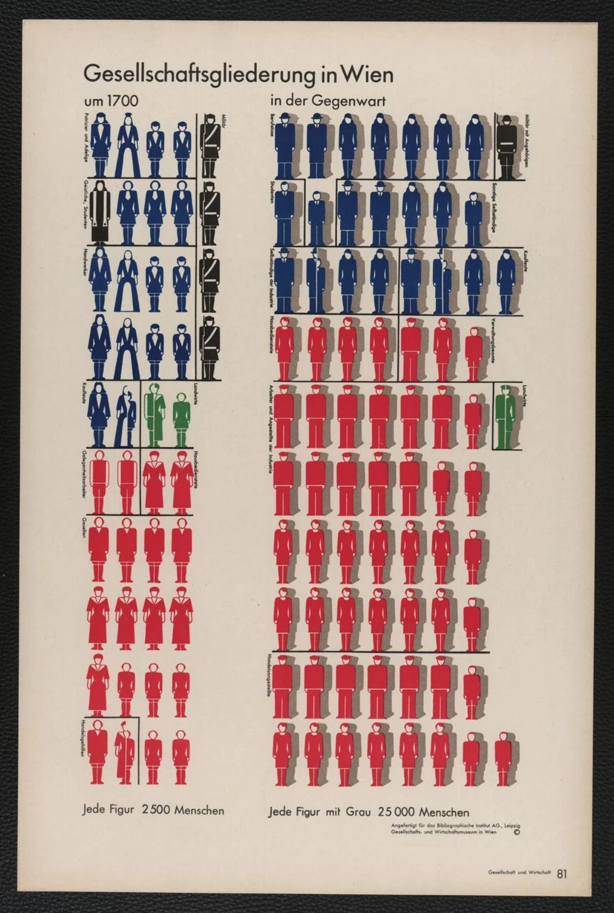
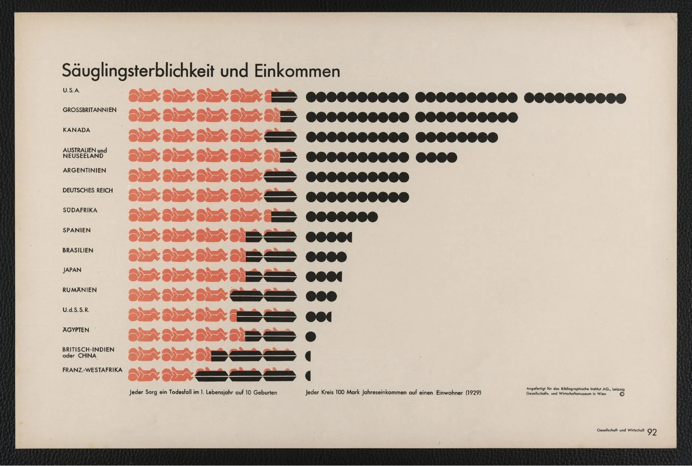

見どころ
石炭は交差する工具、石油は樽で示しています。年代ごとに一列を使い、同じ記号をいくつ並べたかで、生産量の増加を目で追えます。
本文・作品図録公開（実作品画像4点） · 2026-10-30
情報を図で伝える方法・制作体制
Isotype
数字がたくさん並ぶと、比べるのが難しいことがあります。
アイソタイプでは、同じ小さな絵を並べて、数の違いを伝えました。
何を一つの絵で表すか、どの順番で見せるかも考えています。
子どもの本では、科学や歴史を伝えるためにも使われました。
実作品を見る

画像を表示できませんでした。下の出典ページで確認できます。
オットー・ノイラート／ウィーン社会経済博物館 / 1930年
石炭は交差する工具、石油は樽で示しています。年代ごとに一列を使い、同じ記号をいくつ並べたかで、生産量の増加を目で追えます。
Wienbibliothek im Rathaus（ウィーン市立図書館）, d-258740. 『Gesellschaft und Wirtschaft』図版47。
出典で作品・資料を見る ↗Public Domain Mark 1.0
出典先の原画像を開く ↗作品の所蔵・権利情報 ↗画像の利用条件 ↗図版全体を保ち、表示用のWebP画像を作成。
実作品を見る

画像を表示できませんでした。下の出典ページで確認できます。
オットー・ノイラート／ウィーン社会経済博物館 / 1930年
左には1825年から1926年までの機関車、右には同じ長さの線路記号が並びます。機関車の姿の変化と、世界に延びた線路の総延長を一枚で見せています。
Wienbibliothek im Rathaus（ウィーン市立図書館）, d-258740. 『Gesellschaft und Wirtschaft』図版57。
出典で作品・資料を見る ↗Public Domain Mark 1.0
出典先の原画像を開く ↗作品の所蔵・権利情報 ↗画像の利用条件 ↗図版全体を保ち、表示用のWebP画像を作成。
実作品を見る

画像を表示できませんでした。下の出典ページで確認できます。
オットー・ノイラート／ウィーン社会経済博物館 / 1930年
1700年ごろの住民を左に、刊行当時の住民を右に並べました。服と色で集団を見分けられます。下の凡例を見ると、左の人型一体は2,500人、右の灰色の影が付いた人型一体は25,000人を表します。
Wienbibliothek im Rathaus（ウィーン市立図書館）, d-258740. 『Gesellschaft und Wirtschaft』図版81。
出典で作品・資料を見る ↗Public Domain Mark 1.0
出典先の原画像を開く ↗作品の所蔵・権利情報 ↗画像の利用条件 ↗図版全体を保ち、表示用のWebP画像を作成。
実作品を見る

画像を表示できませんでした。下の出典ページで確認できます。
オットー・ノイラート／ウィーン社会経済博物館 / 1930年
赤ちゃんと棺の記号で乳児死亡率を左側に示し、所得を表す黒い丸を右側に置いています。一行が一つの国や地域で、二つの統計を同じ行で読み比べられます。
Wienbibliothek im Rathaus（ウィーン市立図書館）, d-258740. 『Gesellschaft und Wirtschaft』図版92。
出典で作品・資料を見る ↗Public Domain Mark 1.0
出典先の原画像を開く ↗作品の所蔵・権利情報 ↗画像の利用条件 ↗図版全体を保ち、表示用のWebP画像を作成。
作品の知名度や画像の入手しやすさだけで選びません。紹介したい作品と、調べて分かったことをまとめました。画像を載せられるかどうかは、別に確かめています。画像の利用許諾を確認できていないものは掲載していません。
図版には、ウィーン社会経済博物館が1930年に刊行した『社会と経済』を使いました。並ぶ記号の数と、一つの記号が表す量を見比べてください。
原題：Unemployed — Gesellschaft und Wirtschaft, no. 87
仕事についていない人の数を伝える図です。
一つの絵がどのくらいの人数を表すか、説明と一緒に読みます。
統計図表・アトラス
数を比べる図記号と、記号の意味を示す凡例（はんれい）を説明する候補です。出版した年と、統計で調べた年を分けて見ます。
Readingの研究資料の図11で作品を特定しています。元の図の数値・単位・画面は、まだ実際に見て確認していません。
原題：Fighting Tuberculosis — 導入チャート（What the Symbols mean）
病気のようすを伝える記号と、その意味を説明するページです。
絵だけに任せず、言葉や専門家の知識も使って伝えています。
公衆衛生教育・巡回展示のチャート
導入部分で、病状を示す記号と、その意味の対応を説明する例です。絵だけで自然にわかるとは考えず、凡例（記号の意味の説明）、文章、専門家との共同作業に注目します。
Readingの研究論文の図1は、宣伝資料と導入チャートを組み合わせて掲載した図です。元の展示の全20枚や、原版そのものと同じではありません。歴史上の教育資料であり、現在の医療上の助言ではありません。
道具や機械を動かす力を、何から得てきたかを比べるページです。
数だけでなく、道具や技術の変化も図で伝えています。
児童書・説明図
農村で使う動力源がどう変わったかを比べる見開きです。数だけでなく、技術の違いや関係も図で説明できることを示します。
University Special Collections所蔵です。見開きの正確なページ番号、各担当者の仕事の分担、画像の権利は確認が必要です。
石炭は交差する工具、石油は樽で示しています。年代ごとに一列を使い、同じ記号をいくつ並べたかで、生産量の増加を目で追えます。
作品・資料の出典を見る ↗原題：Entwicklung der Kohle- und Erdölproduktion seit 1870
オットー・ノイラート／ウィーン社会経済博物館 / 1930年
左には1825年から1926年までの機関車、右には同じ長さの線路記号が並びます。機関車の姿の変化と、世界に延びた線路の総延長を一枚で見せています。
作品・資料の出典を見る ↗原題：Entwicklung der Eisenbahnen
オットー・ノイラート／ウィーン社会経済博物館 / 1930年
1700年ごろの住民を左に、刊行当時の住民を右に並べました。服と色で集団を見分けられます。下の凡例を見ると、左の人型一体は2,500人、右の灰色の影が付いた人型一体は25,000人を表します。
作品・資料の出典を見る ↗原題：Gesellschaftsgliederung in Wien
オットー・ノイラート／ウィーン社会経済博物館 / 1930年
赤ちゃんと棺の記号で乳児死亡率を左側に示し、所得を表す黒い丸を右側に置いています。一行が一つの国や地域で、二つの統計を同じ行で読み比べられます。
作品・資料の出典を見る ↗原題：Säuglingsterblichkeit und Einkommen
オットー・ノイラート／ウィーン社会経済博物館 / 1930年
アイソタイプは、統計や社会の仕組みを、図のくり返しや比較で伝える教育の方法です。説明する順番も大切にします。図記号の形だけでなく、何を選び、どの単位で、誰に伝えるかを考えて組み立てます。
取り組みは、ウィーンの社会経済博物館から始まりました。オットー・ノイラート、データを説明しやすい形へ組み立て直すマリー・ライデマイスター（後のノイラート）、図記号をつくるゲルト・アルンツらが協力して発展させました。移住後の教材や児童書では、数だけでなく、科学や歴史の仕組みも説明しました。
以下は観察のための問いです。すべての作品に共通する固定ルールや、未取得画像の実見結果ではありません。
色が、情報の分類や対応関係をどう示すかを確かめます。特定の三原色を必ず使う、といった決まりにはしません。
図は、見出し、凡例（はんれい、記号の意味を示す説明）、単位と一緒に読みます。「言葉がなくても誰にでも伝わる」とは限りません。
数を示す図では、同じ単位の記号をくり返す方法に注目します。一つの記号がいくつを表しているのでしょう。飾りのアイコンや、記号を大きくして量を示す方法とは区別します。
並べた列や、比べている時点・対象の関係を見ます。児童書では、見開きの使い方と説明の順番も理解を助けます。数を記号でくり返すことだけが、方法のすべてではありません。
COMPARE
スイス・スタイルとは、情報の大切さの順番を伝える点で関心が重なることがあります。ただし、アイソタイプは統計や考え方を、わかる説明に組み立て直す方法です。フラットデザインと形が平面的に見えるだけで、同じものとは考えません。
項目を横に並べる ↗READ TODAY
今のインフォグラフィック（情報を図で伝える表現）でも、アイコンの形より先に、単位、出典、選ばれた対象、比較の条件を確かめることが大切です。今のUI（操作画面）が似ていても、資料なしに直接の後継とは断定しません。
このページを書くときに使った資料です。作品の説明、画像を入手できたかどうか、画像を使う条件は、それぞれ別に確かめています。検索結果で読んだ情報と、元のページを開いて確かめた情報も、調査の記録で分けています。
この項目の実作品画像は4点、参照・関連画像は0点です。画像の収集は続けています。